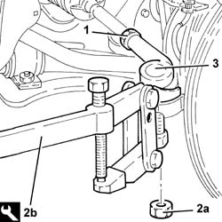

4110B10 steering links - r+r on vehicle - check tow-in/tow-out separately
- Path
- Procedures > 41 STEERING > 4110 STEERING CONTROL AND LINKAGE > 4110B steering control linkage > 4110B10 steering links - r+r on vehicle - check tow-in/tow-out separately
- Kind
- repair procedure (removal / refitting; the operation number is the code)
- Applies to
- all engines; all production periods
- Interactive page
- https://sloeber94.github.io/elrnDB-a156/en/#/3238125
Applies to: all engines; all production periods
 Removing
Removing
 Refitting
RefittingPosition the vehicle on the ramp.
4450B12 front or rear wheels (two) - r+r .
Measure the length of the steering rods to be used for refitting.
1. Loosen the locknuts fixing the steering rods to the power assisted steering box.
2. Undo the nuts (2a) and disconnect the steering rods from the front wheel hub steering knuckles using the tool (2b).
 | Name | Country |
|---|---|---|
2b | Extractor | 1.821.169.000 |
3. Undo and remove the steering rods.

Applies to: all engines; all production periods
Refitting
RemovingPlace the steering rods back in their housings and tighten them until the length measured on removal is restored.
Tighten the locknuts fixing the steering rods to the recommended torque.
 | Fastening | Component | Ø | Value (daNm) |
|---|---|---|---|---|
- | Nut | ADJUSTABLE STEERING LINKS | M14 | (Power assisted steering box side) 4.2 ÷ 5.2 |
Connect the steering rods to the front wheel hub steering knuckles and secure them tightening the nuts to the recommended torque.
| Fastening | Component | Ø | Value (daNm) |
|---|---|---|---|---|
- | Nut | ADJUSTABLE STEERING LINKS | M10 | (Front wheel hub steering knuckle side) 2.9 ÷ 3.6 |
4450B12 front or rear wheels (two) - r+r .
Remove the car from the ramp.